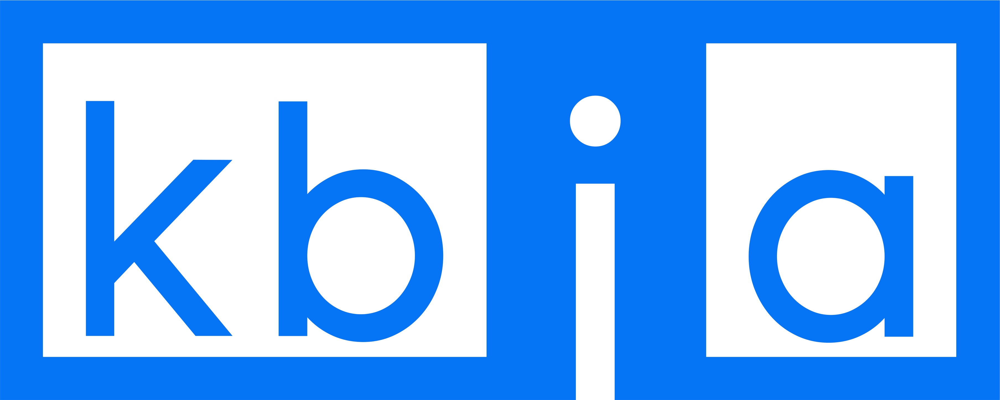

Welcome to River Town
Join host Tina Casagrand Foss, the founder, publisher, and editor-in-chief of The New Territory magazine, on a magical Disneyland log ride down the Missouri River. Along the way, we’ll get to see how this mighty waterway shapes the people and places it flows through.
A collaboration between

